4 Ghosts (47" x 36", Mixed Media)
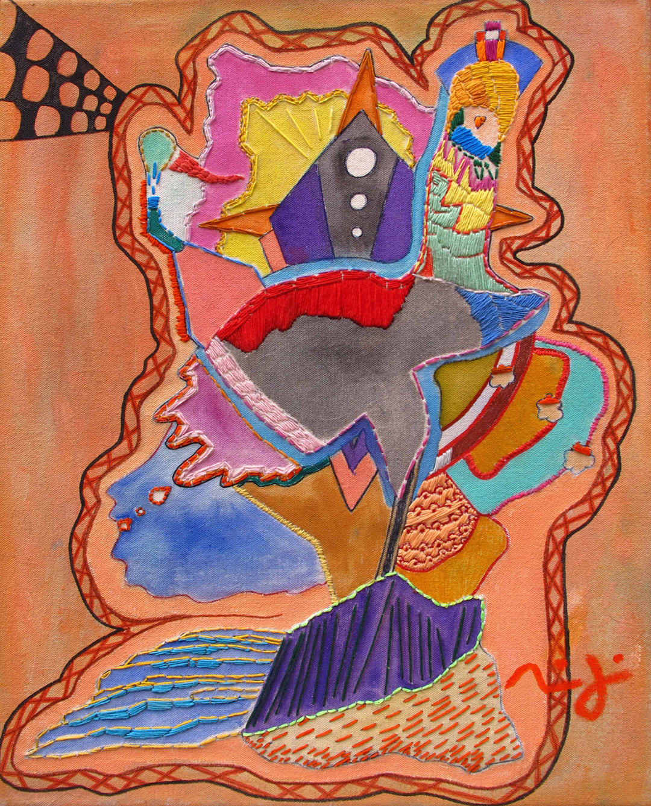The Lighthouse (14" x 18" Acrylic, Ink and Thread)
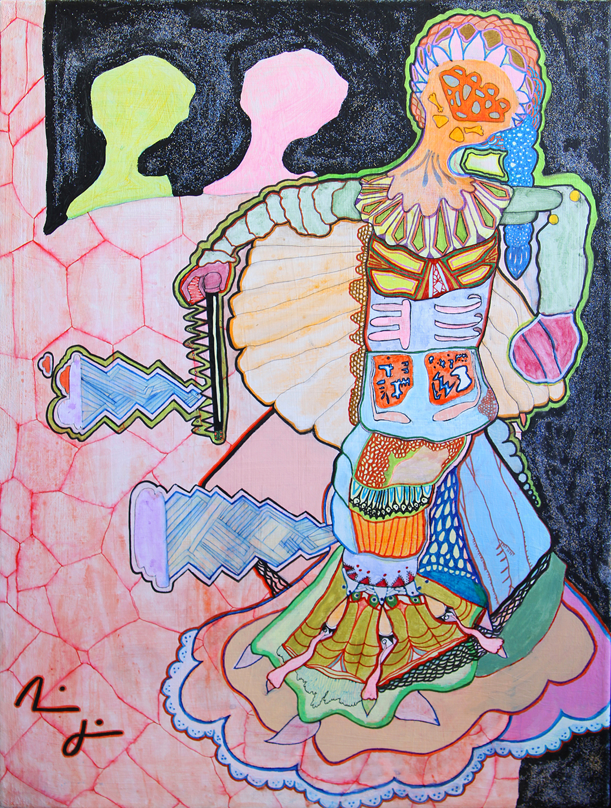Valley Girl (18" x 24" Acrylic, Ink and Sand)
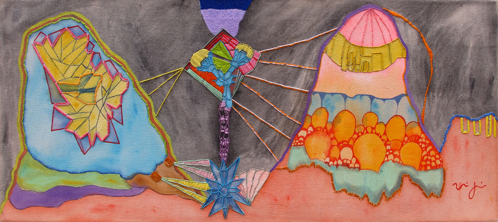Late at Night, on the Highway (32" x 14" Acrylic, Ink and Thread)
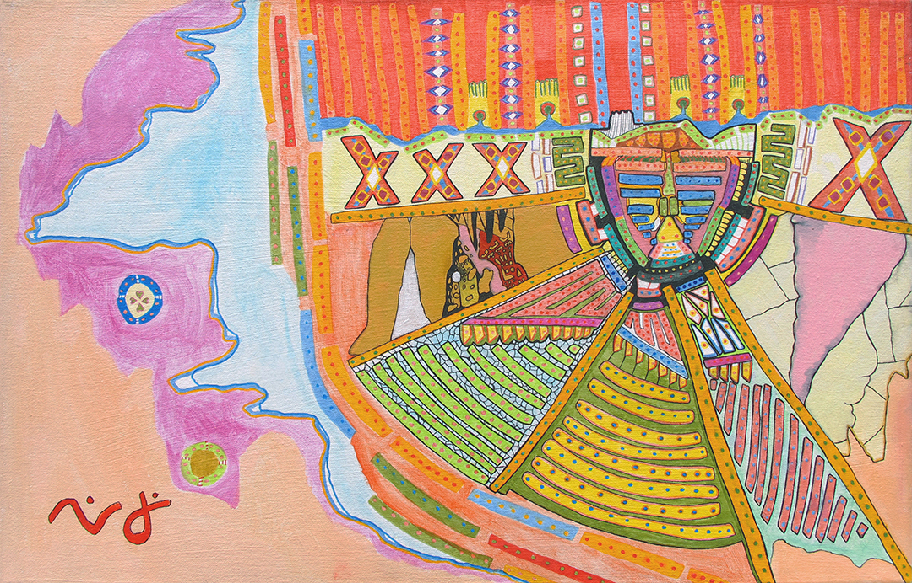God Descending (26" x 17" Acrylic and Ink)
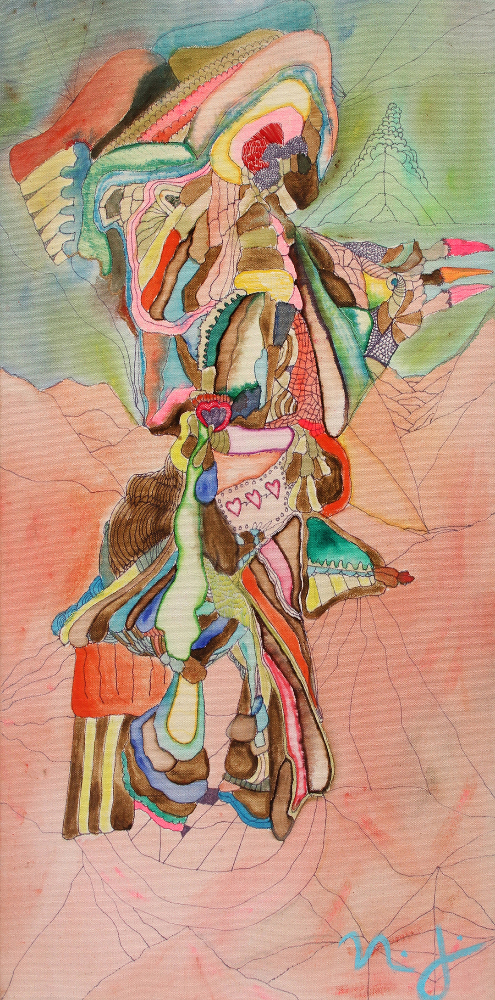Buffalo on Hind Legs ("14" x 28" Acrylic and Thread)
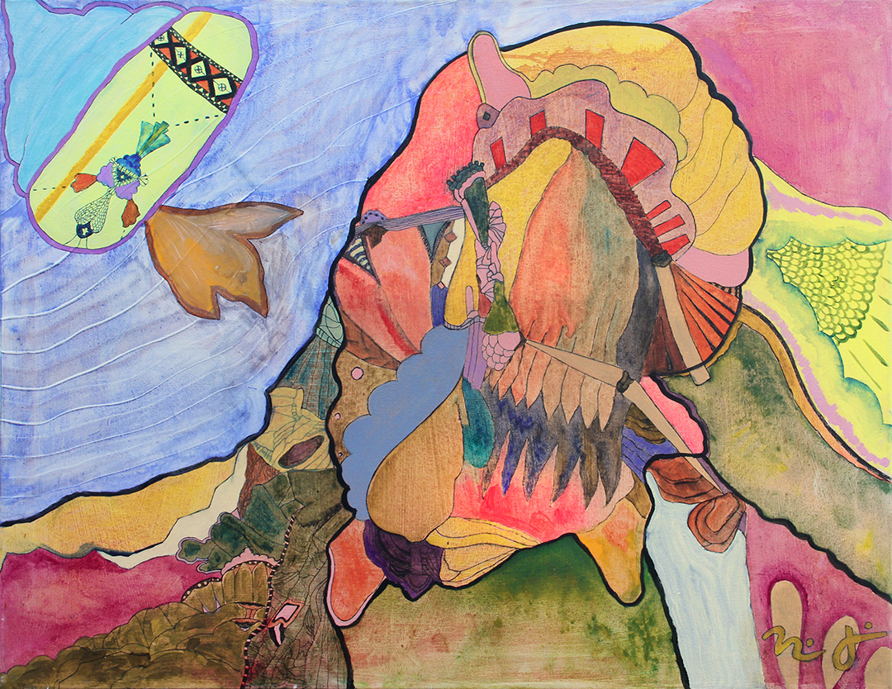Magician's Kiss ("38x 30 Acrylic and Ink)
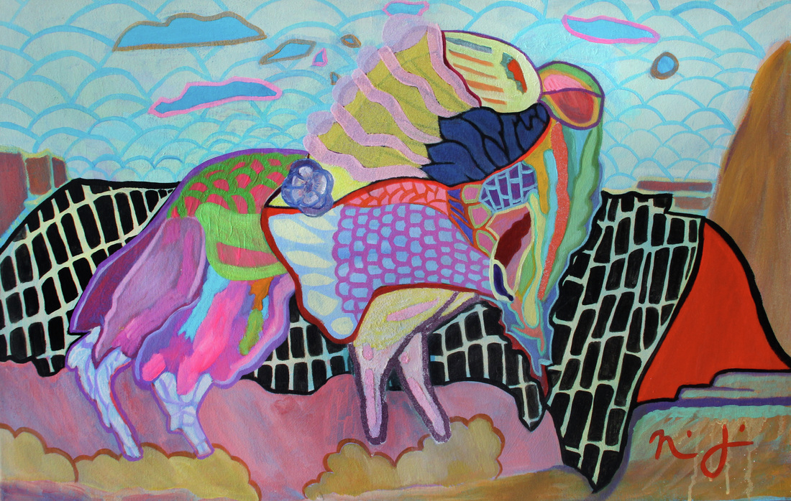Vision in the Desert (41" x 26" Acrylic and Sand)
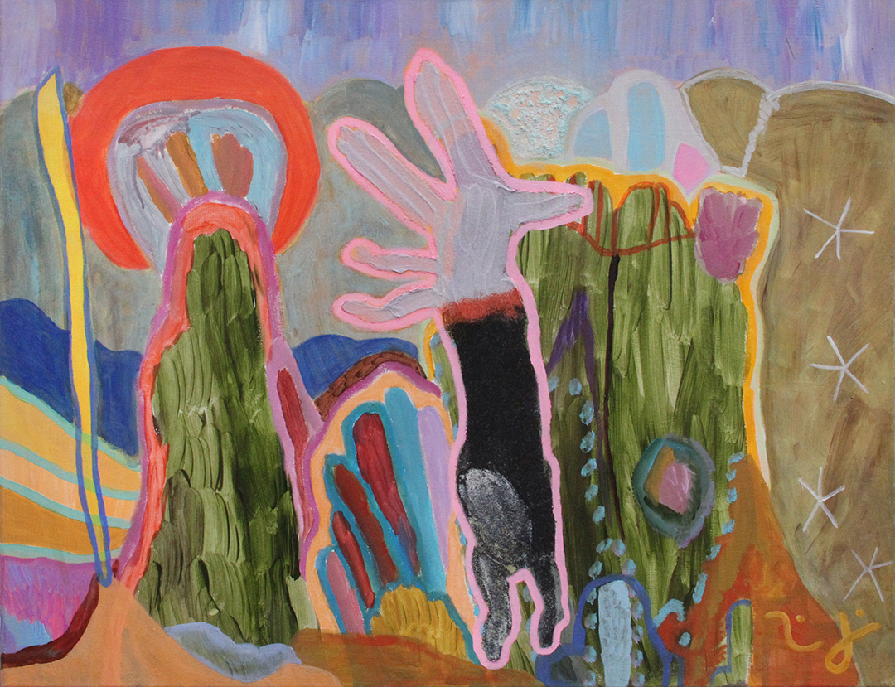Tricky Coyote at the Beach (38" x 30" Acrylic and Sand)
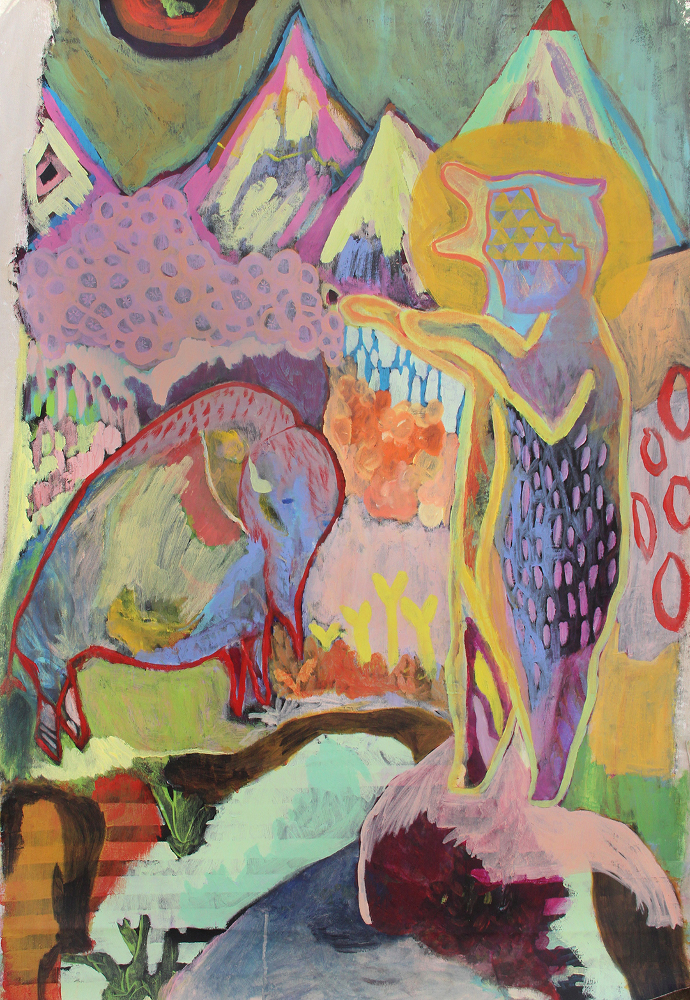Bear and Bison (36" x 54" Acrylic)
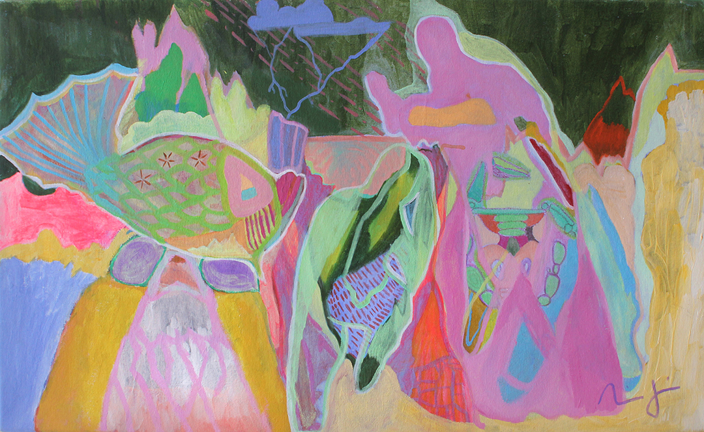Ghost, Crystal, Traveler (44" x 26" Acrylic)
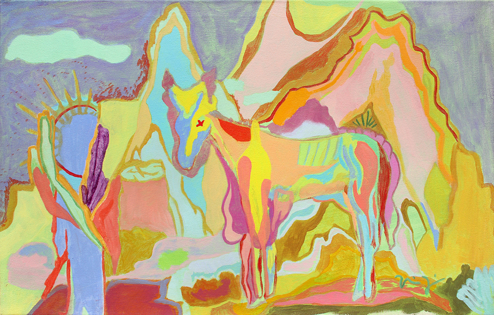Jesus and the Horse (42" x 25" Acrylic)
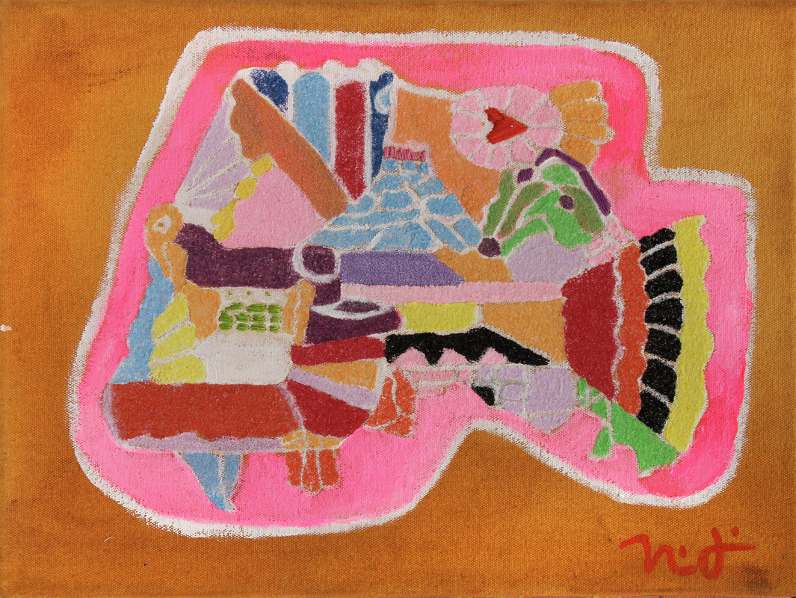Angler at Noon (16" x 12" Acrylic and Sand)